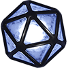
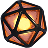

Общая информация
Декрипторы и Мощные Декрипторы — ресурсы, которые позволяют Командирам «сломать лимит» уровней у параметров модулей. Декрипторы предназначены для обычных, синих параметров. Мощные Декрипторы предназначены для уникальных, фиолетовых параметров.
Возможность взлома параметра модуля появляется после того, как этот параметр будет вкачан на максимально возможное количество уровней, указанное в самом меню прокачки модуля. Перед самым первым взломом обычного параметра это значение равняется 40/40. Аналогичным образом можно отследить максимальное возможное количество уровней для уникальных параметров. Для взломов обоих видов параметров понадобятся также Кредиты.

Иконка Декриптора

Иконка Мощного Декриптора
Способы получения Декрипторов
- изучение Координат Галактик.
- Йота. Максимальное к-ство Декрипторов за одно изучение — 1.
- Йота Х. Максимальное к-ство Декрипторов за одно изучение — 1.
- Черная Дыра. Максимальное к-ство Декрипторов за одно изучение — 4.
- Каппа. Максимальное к-ство Декрипторов за одно изучение — 3.
- Мю. Максимальное к-ство Декрипторов за одно изучение — 3.
- Омикрон. Максимальное к-ство Декрипторов за одно изучение — 3.
- прохождение события Рейды. За полное прохождение всех 20 стадий события Командиры получают 1 Декриптор.
- прохождение события Аномалии. Суммарно Командиры могут обменять дважды 500 очков события на 1 Декриптор, т.е. получить 2 Декриптора. Также можно получить дополнительный 1 Декриптор, если занять с 1 по 100 место в конце события.
- прохождение события Элитный Турнир. Командиры могут получить 1 Декриптор за 2000 набранных очков события.
- достижение рейтинговых лиг (0-2000 рейтинга). Командиры могут получить 3 Декриптора за достижение Мастер Лиги (единоразовая награда за достижение 2000 рейтинга).
- достижение рейтинговых подлиг (2000+ рейтинга). Командиры могут получить Декрипторы за достижение следующих подлиг:
- 3 Декриптора за достижение подлиги Легенда.
- 2 Декриптора за достижение подлиги Элита III.
- 1 Декриптор за достижение подлиги Элита II.
- 1 Декриптор за достижение подлиги Элита I.
- 1 Декриптор за достижение подлиги Искуссный III.
- 1 Декриптор за достижение подлиги Искуссный II.
- 1 Декриптор за достижение подлиги Искуссный I.
- игровой режим Арена Флотилий. У Командиров есть шанс получить 1 Декриптор за битву.
- Клановый Пропуск. Суммарно Командиры могут получить 4 Декриптора с Кланового Пропуска в течение Кланового Сезона.
- Клановые боссы. Суммарно Командиры могут получить 3 Декриптора за уничтожение всех четырех клановых боссов.
- Клановый магазин. Командиры могут получить 2 Декриптора, купив их для себя, а также дополнительные Декрипторы в подарок от соклановцев.
- Уровневый пропуск Командира (вкладка Подарки в главном меню ангара). Суммарно Командиры могут получить 2 Декриптора (единоразовая награда за достижение 56 и 61 уровней).
- покупка Ежедневных предложений — 1 Декриптор за 500 Селестия.
- покупка специальных предложений — 3 Декриптора за 990 Селестия.
- другие предложения в игровом магазине и вебшопе.
- участие в событиях и конкурсах сообщества.
Способы получения Мощных Декрипторов
- изучение Координат Галактик.
- Йота. Максимальное к-ство Мощных Декрипторов за одно изучение — 1.
- Йота Х. Максимальное к-ство Мощных Декрипторов за одно изучение — 1.
- Черная Дыра. Максимальное к-ство Мощных Декрипторов за одно изучение — 1.
- Омикрон. Максимальное к-ство Мощных Декрипторов за одно изучение — 1.
- прохождение события Аномалии. Можно получить 1 Мощный Декриптор, если занять с 1 по 10 место в конце события.
- достижение рейтинговых подлиг (2000+ рейтинга). Командиры могут получить Мощные Декрипторы за достижение следующих подлиг:
- 2 Мощных Декриптора за достижение подлиги Легенда.
- 1 Мощный Декриптор за достижение подлиги Элита III.
- 1 Мощный Декриптор за достижение подлиги Элита II.
- 1 Мощный Декриптор за достижение подлиги Элита I.
- игровой режим Арена Флотилий. У Командиров есть шанс получить 1 Мощный Декриптор за битву.
- Клановый Пропуск. Суммарно Командиры могут получить 1 Мощный Декриптор с Кланового Пропуска в течение Кланового Сезона.
- Клановые боссы. Суммарно Командиры могут получить 2 Мощных Декриптора за уничтожение всех четырех клановых боссов.
- Клановый магазин. Командиры могут получить 2 Мощных Декриптора, купив их для себя, а также дополнительные Мощные Декрипторы в подарок от соклановцев.
- Уровневый пропуск Командира (вкладка Подарки в главном меню ангара). Суммарно Командиры могут получить 1 Мощный Декриптор (единоразовая награда за достижение 58 уровня).
- покупка Ежедневных предложений — 1 Мощный Декриптор за 600 Селестия.
- другие предложения в игровом магазине и вебшопе.
- участие в событиях и конкурсах сообщества.